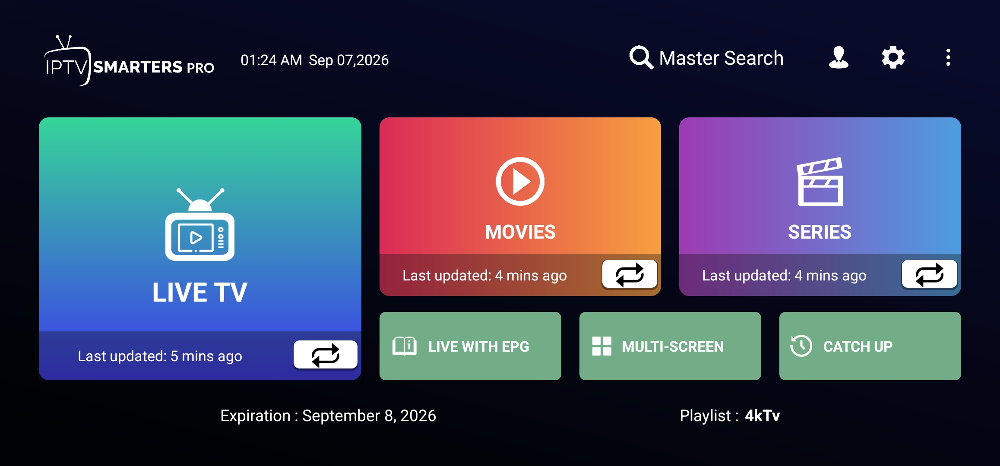
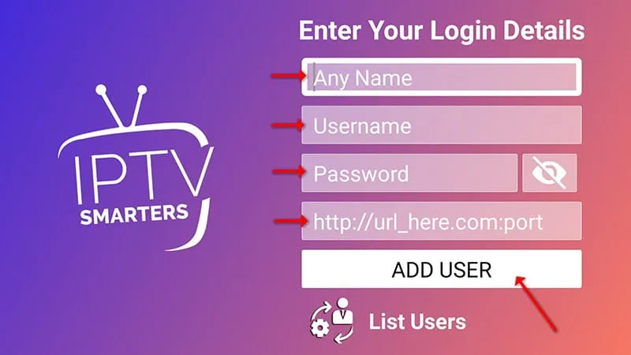
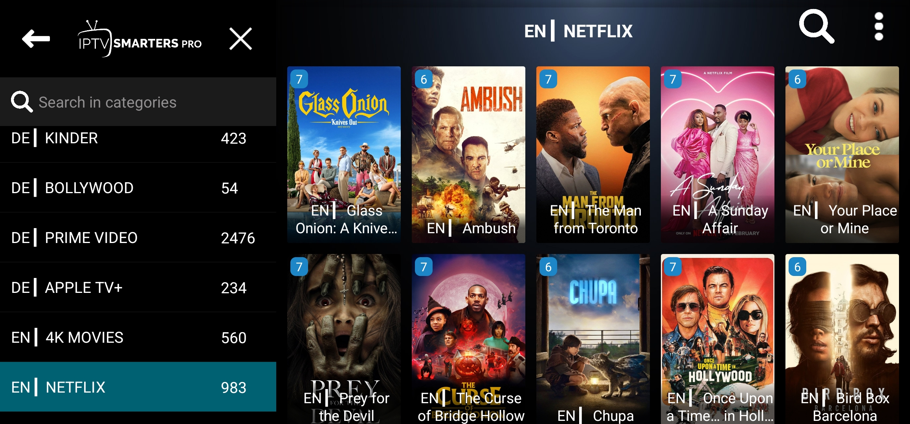

How to Use IPTV Smarters Pro: Complete Setup Guide
Already downloaded IPTV Smarters Pro? This step-by-step guide shows you how to add your IPTV service, enter your Xtream Codes API login details, and start using Live TV, Movies, Series and other available sections on a compatible device.

Before You Start
IPTV Smarters Pro is a player/application used to access compatible IPTV services. It does not provide IPTV channels, movies, series or subscriptions by itself. You need an IPTV service and the login information supplied by that provider.
If you are a USAView customer, use the login details provided with your USAView subscription when completing the setup below.
IPTV Smarters Pro is available on many popular compatible devices and platforms, although availability, menus and setup screens can vary depending on the device.
Using USAView? Your USAView account credentials are used to connect your subscription to the compatible IPTV player. If you need help with your account or login details, contact USAView support.
How to Set Up IPTV Smarters Pro
Follow these four simple steps to add your IPTV service to Smarters Pro and begin browsing the categories included with your account.
-
01
Open IPTV Smarters Pro and Choose a Login Method
When you first open IPTV Smarters Pro, you will see several options for adding an account. If your IPTV provider supplied Xtream Codes/API credentials, select Login with Xtream Codes API.
If your provider gave you login information for a different method, choose the option that matches the details you received.

Select "Login with Xtream Codes API" when your IPTV provider supplied Xtream Codes/API credentials. -
02
Enter Your IPTV Login Details
Enter the information exactly as provided by your IPTV service. If you are using USAView, use the username, password and server URL supplied with your USAView account.
Check each field carefully and avoid adding extra spaces before or after your credentials.
Playlist Name Optional. Enter any recognizable name for your account, such as the name of your IPTV service.Username Enter the username supplied by your IPTV provider.Password Enter the password supplied by your IPTV provider exactly as provided.URL Enter the server or portal URL supplied by your IPTV provider.
Enter your playlist name, username, password and server URL, then select "Add User." When all fields are complete, select Add User. The account can load successfully only when the login details are correct, the server is available, and the IPTV service is active.
-
03
Open the IPTV Smarters Pro Home Screen
After your account loads successfully, the IPTV Smarters Pro home screen may display sections such as Live TV, Movies, Series and Catch Up.
The categories and content available on the home screen depend on your IPTV provider and subscription. Not every service includes every category.
The IPTV Smarters Pro home screen provides access to the categories included with your IPTV service. -
04
Browse Movies
Select Movies from the home screen to browse the movie categories and titles available through your IPTV account.
Browse the available titles, select a movie you want to watch, and follow the on-screen playback options.

Browse the Movies section to find titles available through your IPTV service. The movie library displayed in IPTV Smarters Pro depends on your IPTV provider and the content included with your subscription.
IPTV Smarters Pro Main Features
Depending on your IPTV provider and account, IPTV Smarters Pro may include several sections for browsing different types of content.
Troubleshooting IPTV Smarters Pro Login Problems
If IPTV Smarters Pro does not load your account, check the following before contacting your IPTV provider:
- Recheck your username for typing errors.
- Confirm that your password is entered exactly as provided.
- Make sure the server or portal URL is complete and correct.
- Remove accidental spaces before or after your login details.
- Confirm that your IPTV subscription is active and has not expired.
- Check that your device has a working internet connection.
- Try again later if the IPTV provider's server may be temporarily unavailable.
If you are a USAView customer and your login details are not working, contact USAView support for assistance. Never share your password publicly.
Frequently Asked Questions
Open IPTV Smarters Pro, choose the login method that matches your IPTV provider's credentials, enter the supplied username, password and server URL, then select Add User.
Choose the login method that matches the information supplied by your IPTV provider. If you received Xtream Codes/API credentials, select "Login with Xtream Codes API."
Xtream Codes API is a login format supported by some IPTV services. When applicable, your provider supplies the server URL, username and password used with this login option.
Depending on the login method, you may need a username, password, server or portal URL, and an optional playlist name. Your IPTV provider should provide the required account information.
Check your username, password and server URL for typing errors or extra spaces. Also confirm that your IPTV subscription is active and that the provider's server is available.
IPTV Smarters Pro is available on many popular compatible devices and platforms, but availability and setup screens can vary by device. Check the relevant app store or official device support information.
No. IPTV Smarters Pro is a player/application. The channels, movies, series and other content displayed in the app come from the IPTV service or playlist connected to your account.
Categories depend on your IPTV provider and account. Your service may not include Live TV, Movies, Series, Catch Up or other sections.
Yes. If you have an active USAView subscription and compatible login credentials, you can use the information provided with your USAView account to configure the service in IPTV Smarters Pro. Follow the setup steps above or contact USAView support if you need help.
Need Help With Your IPTV Setup?
Explore our other setup guides or contact USAView if you need help getting started with your subscription.